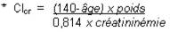

RÉSUMÉ DES CARACTÉRISTIQUES DU PRODUIT
ANSM - Mis à jour le : 27/03/2014
CAPTOPRIL TEVA 25 mg, comprimé quadrisécable
2. COMPOSITION QUALITATIVE ET QUANTITATIVE
Captopril ....................................................................................................................................... 25,00 mg
Pour un comprimé quadrisécable de 100,00 mg.
Pour la liste complète des excipients, voir rubrique 6.1.
Comprimé quadrisécable.
4.1. Indications thérapeutiques
· Hypertension artérielle.
· Insuffisance cardiaque congestive.
· Infarctus du myocarde dans les 24 premières heures chez les patients en situation hémodynamique stable.
· Post-infarctus du myocarde chez les patients avec dysfonction ventriculaire gauche (fraction d'éjection ≤ à 40 %), et par ailleurs en l'absence de signe clinique d'insuffisance cardiaque. Le traitement au long cours par le captopril améliore la survie à long terme, réduit le risque de récidive d'infarctus ainsi que le risque de développement d'une insuffisance cardiaque.
· Néphropathie diabétique: macroprotéinurique du diabète insulino-dépendant. Le traitement au long cours ralentit la progression de l'atteinte rénale.
4.2. Posologie et mode d'administration
Le captopril, sous forme de comprimés, est administré avant, pendant ou après les repas, d'éventuelles modifications de l'absorption par les aliments ne modifiant pas l'effet thérapeutique (voir rubrique 5.2).
Hypertension artérielle
En l'absence de déplétion hydrosodée préalable ou d'insuffisance rénale (soit en pratique courante):
La posologie efficace est de 50 mg par jour en 2 prises de 25 mg à douze heures d'intervalle.
En fonction de la réponse au traitement, la posologie doit être adaptée, en respectant des paliers de 3 à 4 semaines, jusqu'à 100 mg/jour en 2 prises.
Certaines hypertensions sévères peuvent nécessiter des doses plus élevées (au maximum de 150 mg/jour en 2 ou 3 prises) tout au moins en début de traitement.
Ces doses peuvent ensuite être réduites.
Exceptionnellement, des doses supérieures à 150 mg/jour sont utilisées. Elles justifient une surveillance hématologique et rénale (voir rubrique 4.4 Mises en garde).
Dans l'hypertension artérielle préalablement traitée par diurétique:
· soit arrêter le diurétique 3 jours auparavant pour le réintroduire par la suite si nécessaire,
· soit administrer la dose initiale de captopril de 12,50 mg (1/2 de comprimé à 25 mg) et ajuster en fonction de la réponse tensionnelle obtenue et de la tolérance (voir rubrique 4.4 Précautions d'emploi).
Il est également recommandé de doser la créatinine plasmatique et la kaliémie avant le traitement et dans les 15 jours qui suivent la mise en route du traitement.
Chez le sujet âgé (voir rubrique 4.4 Précautions d'emploi), instaurer éventuellement le traitement par une posologie plus faible de 25 mg/jour adaptée à la fonction rénale du patient, appréciée avant la mise en route du traitement, dans le cas où la clairance de la créatinine serait inférieure à 40 ml/min. (cf. tableau infra).
La valeur de la clairance de la créatinine (Clcr) calculée à partir de la créatininémie et ajustée sur l'âge, le poids et le sexe, selon la formule de Cockcroft* par exemple, reflète correctement l'état de la fonction rénale chez ce type de patient.

*Avec
L'âge exprimeé en années,
Le poids en kg,
La créatininémie en micromol/l.
Cette formule est valable pour les sujets de sexe masculin, et doit être corrigée pour les femmes en multipliant le résultat par 0,85.
Dans l'hypertension rénovasculaire, il est recommandé de débuter le traitement à la posologie de 6,25 mg par jour (1/4 de comprimé à 25 mg) pour l'ajuster par la suite à la réponse tensionnelle du patient.
La créatininémie et la kaliémie seront contrôlées afin de détecter l'apparition d'une éventuelle insuffisance rénale fonctionnelle (voir rubrique 4.4 Précautions d'emploi).
En cas d'insuffisance rénale, la posologie de captopril est ajustée au degré de cette insuffisance:
Les posologies données par le tableau suivant ne doivent pas être dépassées afin d'éviter une élévation trop importante des concentrations du médicament.
|
Clairance de la créatinine ml/min/1.73 m2 |
Dose journalière maximale totale (mg) |
Doses initiales (mg) |
|
|
> 41 |
en principe 150 |
25 - 50 |
|
|
40 - 21 |
100 |
25 |
|
|
20 - 11 |
75 |
12,5 |
|
|
< 10 |
37,5 |
6,25 |
Les diurétiques à associer dans ce cas sont les diurétiques dits de l'anse.
Chez ces malades, la pratique médicale normale comprend un contrôle périodique du potassium et de la créatinine, par exemple tous les deux mois en période de stabilité thérapeutique (voir rubrique 4.4 Précautions d'emploi).
Chez l'hypertendu hémodialysé
Le captopril est dialysable (voir rubrique 4.4 Mises en garde).
Insuffisance cardiaque congestive
La dose initiale doit être faible, en particulier en cas de:
· pression artérielle normale ou basse au départ
· insuffisance rénale
· hyponatrémie iatrogène (diurétique) ou non.
Le captopril peut être utilisé en association avec le traitement diurétique accompagné, le cas échéant, d'un traitement digitalique.
Il est recommandé d'initier le traitement par 6,25 mg (1/4 de comprimé à 25 mg) sous surveillance tensionnelle et de l'accroître progressivement par paliers de 12,5 mg puis 25 mg par jour, toujours sous surveillance tensionnelle, jusqu'à la dose efficace qui se situe entre 50 et 100 mg par jour répartie en 2 ou 3 prises.
La dose retenue ne devrait pas abaisser la pression artérielle systolique en orthostatisme au dessous de 90 mmHg.
Une hypotension symptomatique peut apparaître chez les insuffisants cardiaques traités par de fortes doses de diurétiques: la dose initiale doit dans ce cas être réduite de moitié (voir rubrique 4.4 Précautions d'emploi) en commençant le traitement par une dose de 6,25 mg un jour sur deux.
Les dosages de la créatinine et de la kaliémie doivent être faits à chaque augmentation de posologie, puis tous les 3 à 6 mois en fonction du stade de l'insuffisance cardiaque, afin de contrôler la tolérance au traitement.
Infarctus du myocarde à la phase aiguë
Le traitement par captopril sera initié en milieu hospitalier le plus tôt possible après le début des signes et/ou symptômes chez des patients hémodynamiquement stables.
Une dose- test de 6,25 mg est administrée puis 2 heures après une dose de 12,5 mg et 12 heures après une dose de 25 mg. Le lendemain, le captopril sera administré à la dose de 100 mg/jour en 2 prises journalières pendant 4 semaines si la tolérance hémodynamique du patient le permet.
A la fin de ces 4 semaines de traitement, l'état du patient sera réévalué avant prise de décision thérapeutique pour la phase de post-infarctus du myocarde.
Post-infarctus du myocarde
Si le traitement par captopril n'a pas été débuté à la phase aiguë de l'infarctus du myocarde dans les 24 premières heures, il est suggéré de commencer le traitement entre le 3ème et le 16ème jour de l'infarctus dès que les conditions de mise sous traitement sont réunies (stabilité hémodynamique; prise en charge d'une éventuelle ischémie résiduelle).
La mise en route du traitement, jusqu'à ce que soit atteinte la dose de 75 mg, sera réalisée en milieu hospitalier sous surveillance stricte, notamment tensionnelle.
La dose initiale doit être faible (voir rubrique 4.4 Mises en garde spéciales) surtout si les patients présentent une pression artérielle normale ou basse au départ. Le traitement est initié par la prise d'1/4 de comprimé à 25 mg (6,25 mg) suivi par 1/2 comprimé à 25 mg (12,5 mg), 3 fois par jour pendant 2 jours puis de 1 comprimé à 25 mg, 3 fois par jour si la tolérance hémodynamique du patient le permet.
La dose recommandée pour une cardioprotection efficace dans le traitement au long cours est de 75 mg à 150 mg par jour en deux ou trois prises.
En cas d'hypotension symptomatique, comme dans l'insuffisance cardiaque, la posologie des diurétiques et/ou autres vasodilatateurs associés pourra être réduite pour permettre d'atteindre la dose d'équilibre de captopril.
Le cas échéant, la dose de captopril sera adaptée en fonction de la tolérance clinique du patient.
Le captopril peut être associé aux autres traitements de l'infarctus du myocarde tels que les thrombolytiques, les bêta-bloquants, l'aspirine.
Néphropathie diabétique
La posologie quotidienne de captopril est de 50 à 100 mg, répartis en deux ou trois prises quotidiennes.
En cas d'insuffisance rénale chronique avérée, cette posologie sera ajustée au degré de l'insuffisance rénale (cf. tableau de correspondance et formule de calcul de la clairance de la créatinine à partir de la créatininémie).
Ce médicament NE DOIT JAMAIS être utilisé en cas de:
· Hypersensibilité au captopril ou à l'un des excipients
· Antécédent d'angio-œdème (œdème de Quincke) lié à la prise d'un inhibiteur de l'enzyme de conversion de l'angiotensine.
· 2ème et 3ème trimestres de la grossesse (voir rubriques 4.4 et 4.6).
4.4. Mises en garde spéciales et précautions d'emploi
Risque de neutropénie/agranulocytose sur terrain immunodéprimé
Des inhibiteurs de l'enzyme de conversion dont le captopril ont exceptionnellement entraîné une agranulocytose et/ou une dépression médullaire lorsqu'ils étaient administrés:
· à doses élevées (> 150 mg de captopril par jour),
· chez des patients insuffisants rénaux associant des maladies de système (collagénoses telles que lupus érythémateux, disséminé ou sclérodermie), avec un traitement immunosuppresseur et/ou potentiellement leucopéniant.
Le strict respect des posologies préconisées semble constituer la meilleure prévention de la survenue de ces évènements (ne pas dépasser 150 mg/jour de captopril).
Toutefois, si un IEC doit être administré à ce type de patients, le rapport bénéfice/risque doit être soigneusement mesuré.
Hypersensibilité/angio-œdème (Œdème de Quincke)
Un angio-œdème de la face, des extrémités, des lèvres, de la langue, de la glotte et/ou du larynx a été rarement signalé chez les patients traités par un inhibiteur de l'enzyme de conversion, le captopril inclus. Dans de tels cas, le captopril doit être arrêté immédiatement et le patient surveillé jusqu'à disparition de l'œdème. Lorsque l'œdème n'intéresse que la face et les lèvres, l'évolution est en général régressive sans traitement, bien que les antihistaminiques aient été utilisés pour soulager les symptômes.
L'angio-œdème associé à un œdème laryngé peut être fatal. Lorsqu'il y a atteinte de la langue, de la glotte ou du larynx, pouvant entraîner une obstruction des voies aériennes, une solution d'adrénaline sous-cutanée à 1/1000 (0,3 ml à 0,5 ml), doit être administrée rapidement et les autres traitements appropriés doivent être appliqués.
La prescription d'un IEC ne doit pas être envisagée par la suite chez ces patients (voir rubrique 4.3).
Hémodialysés
Des réactions anaphylactoïdes (œdèmes de la langue et des lèvres avec dyspnée et baisse tensionnelle) ont également été observées au cours d'hémodialyses utilisant des membranes de haute perméabilité (polyacrylonitrile) chez des patients traités par inhibiteurs de l'enzyme de conversion. Il est recommandé d'éviter cette association.
Grossesse
Les IEC ne doivent pas être débutés au cours de la grossesse. A moins que le traitement par IEC ne soit considéré comme essentiel, il est recommandé aux patientes qui envisagent une grossesse de modifier leur traitement antihypertenseur pour un médicament ayant un profil de sécurité bien établi pendant la grossesse. En cas de diagnostic de grossesse, le traitement par IEC doit être arrêté immédiatement et si nécessaire un traitement alternatif sera débuté (voir rubriques 4.3 et 4.6).
Précautions d'emploi
Une toux sèche a été rapportée avec l'utilisation des inhibiteurs de l'enzyme de conversion. Elle est caractérisée par sa persistance ainsi que par sa disparition à l'arrêt du traitement. Dans les cas où la prescription d'un IEC s'avère indispensable, la poursuite du traitement peut être envisagée. L'étiologie iatrogénique doit être envisagée en présence de ce symptôme.
Enfant
La tolérance et l'efficacité du captopril chez l'enfant n'ont pas été démontrées par des études contrôlées. Cependant, le captopril a été administré en cardiologie pédiatrique. Le traitement est initié en milieu hospitalier.
Risque d'hypotension artérielle et/ou d'insuffisance rénale (insuffisance cardiaque, déplétion hydrosodée...)
Une stimulation importante du système rénine-angiotensine-aldostérone est observée en particulier au cours des déplétions hydrosodées importantes (régime désodé strict ou traitement diurétique prolongé), chez des patients à tension artérielle initialement basse, en cas de sténose artérielle rénale, d'insuffisance cardiaque congestive et de cirrhose œdémato-ascitique.
Le blocage de ce système par un inhibiteur de l'enzyme de conversion peut alors provoquer, surtout lors de la première prise et au cours des deux premières semaines de traitement, une brusque chute tensionnelle et/ou, quoique rarement et dans un délai plus variable, une élévation de la créatinine plasmatique traduisant une insuffisance rénale fonctionnelle parfois aiguë.
Dans tous ces cas de figure, la mise en route du traitement doit alors être progressive.
Sujet âgé
La fonction rénale (créatininémie) et la kaliémie devront être appréciées avant le début du traitement (voir rubrique 4.2). La dose de départ sera ajustée ultérieurement en fonction de la réponse tensionnelle, a fortiori en cas de déplétion hydrosodée, afin d'éviter toute hypotension de survenue brutale.
Insuffisance rénale
En cas d'insuffisance rénale (clairance de la créatinine inférieure à 40 ml/min), la posologie initiale de captopril sera adaptée à la clairance de la créatinine, puis ajustée en fonction de la réponse thérapeutique (voir rubrique 4.2).
Chez ces malades et ceux atteints de néphropathie glomérulaire, la pratique médicale normale comprend un contrôle périodique du potassium et de la créatinine.
Sujet ayant une athérosclérose connue
Puisque le risque d'hypotension existe chez tous ces patients, on sera particulièrement prudent chez ceux ayant une cardiopathie ischémique ou une insuffisance circulatoire cérébrale, en débutant le traitement à faible posologie.
Anémie
Une anémie avec baisse du taux d'hémoglobine a été mise en évidence chez des patients transplantés rénaux ou hémodialysés, baisse d'autant plus importante que les valeurs de départ sont élevées. Cet effet ne semble pas dose-dépendant mais serait lié au mécanisme d'action des inhibiteurs de l'enzyme de conversion.
Cette baisse est modérée, survient dans un délai de 1 à 6 mois puis reste stable. Elle est réversible à l'arrêt du traitement. Celui-ci peut être poursuivi chez ce type de patients, en pratiquant un contrôle hématologique régulier.
Hypertension rénovasculaire
Le traitement de l'hypertension artérielle rénovasculaire est la revascularisation. Néanmoins, le captopril peut être utile aux malades présentant une hypertension rénovasculaire dans l'attente de l'intervention correctrice ou lorsque cette intervention n'est pas possible. Le traitement doit alors être institué avec précaution et une surveillance de la fonction rénale et de la kaliémie doit être exercée, certains patients ayant développé une insuffisance rénale fonctionnelle, réversible à l'arrêt du traitement (voir rubrique 4.2).
Dans l'hypertension avec maladie rénovasculaire unilatérale, commencer le traitement par de faibles doses (¼ de comprimé à 25 mg) et ne prolonger le traitement que s'il n'existe pas de diminution de la filtration glomérulaire ipsilatérale à la sténose.
Une surveillance accrue de la filtration glomérulaire est à effectuer.
Autres populations à risque
Chez les patients en insuffisance cardiaque sévère (stade IV), et chez les patients diabétiques insulino-dépendants (tendance spontanée à l'hyperkaliémie), l'instauration du traitement se fera sous surveillance médicale avec une posologie initiale réduite.
Chez les diabétiques anciens et notamment avec néphropathie et neuropathie, le risque d'hyperkaliémie sous IEC est augmenté du fait d'un hypoaldostéronisme fréquent, ce qui doit conduire à une surveillance accrue de la kaliémie.
Ne pas interrompre un traitement par bêta-bloquant chez un hypertendu atteint d'insuffisance coronarienne: l'I.E.C. sera ajouté au bêta-bloquant.
Intervention chirurgicale
En cas d'anesthésie, et plus encore lorsque l'anesthésie est pratiquée avec des agents à potentiel hypotenseur, les I.E.C. sont à l'origine d'une hypotension. L'interruption thérapeutique, lorsqu'elle est possible, est donc recommandée la veille de l'intervention pour le captopril.
4.5. Interactions avec d'autres médicaments et autres formes d'interactions
Certains médicaments ou classes thérapeutiques sont susceptibles de favoriser la survenue d'une hyperkaliémie: les sels de potassium, les diurétiques hyperkaliémiants, les inhibiteurs de l'enzyme de conversion, les antagonistes de l'angiotensine II, les anti-inflammatoires non stéroïdiens, les héparines (de bas poids moléculaire ou non fractionnées), les immunosuppresseurs comme la ciclosporine ou le tacrolimus, le triméthoprime.
L'association de ces médicaments majore le risque d'hyperkaliémie. Ce risque est particulièrement important avec les diurétiques épargneurs de potassium, notamment lorsqu'ils sont associés entre eux ou avec des sels de potassium, tandis que l'association d'un IEC et d'un AINS, par exemple, est à moindre risque dès l'instant que sont mises en œuvre les précautions recommandées.
Pour connaître les risques et les niveaux de contrainte spécifiques aux médicaments hyperkaliémiants, il convient de se reporter aux interactions propres à chaque substance.
Toutefois, certaines substances, comme le triméthoprime, ne font pas l'objet d'interactions spécifiques au regard de ce risque. Néanmoins, ils peuvent agir comme facteurs favorisants lorsqu'ils sont associés à d'autres médicaments déjà mentionnés dans ce chapeau.
+ Diurétiques épargneurs de potassium seuls ou associés (amiloride, canrénoate de potassium, spironolactone, triamtérène) à l'exception de la spironolactone à des doses comprises entre 12,5 mg et 50 mg/jour dans le traitement de l'insuffisance cardiaque, voir association faisant l'objet d'une précaution d'emploi
Hyperkaliémie potentiellement létale, surtout lors d'une insuffisance rénale (addition des effets hyperkaliémiants), sauf en cas d'hypokaliémie.
+ Potassium
Sauf s'il existe une hypokaliémie.
Hyperkaliémie (potentiellement létale) surtout lors d'une insuffisance rénale (addition des effets hyperkaliémiants).
+ Lithium
Augmentation de la lithémie pouvant atteindre des valeurs toxiques (diminution de l'excrétion rénale du lithium).
Si l'usage d'un inhibiteur de l'enzyme de conversion est indispensable, surveillance stricte de la lithémie et adaptation de la posologie du lithium.
+ Estramustine
Risque de majoration des effets indésirables à type d'œdème angio-neurotique (angio-œdème).
Associations faisant l'objet de précautions d’emploi
+ Antidiabétiques (insulines, sulfamides hypoglycémiants)
Décrit pour le captopril, l'enalapril.
L'utilisation des inhibiteurs de l'enzyme de conversion peut entraîner une majoration de l'effet hypoglycémiant chez le diabétique traité par insuline ou sulfamides hypoglycémiants. La survenue de malaises hypoglycémiques semble exceptionnelle (amélioration de la tolérance au glucose qui aurait pour conséquence une réduction des besoins en insuline).
Renforcer l'autosurveillance glycémique.
+ Baclofène
Majoration du risque d'hypotension, notamment orthostatique.
Surveillance de la pression artérielle et adaptation posologique de l'antihypertenseur si nécessaire.
+ Diurétiques hypokaliémiants
Risque d'hypotension artérielle brutale et/ou d'insuffisance rénale aiguë lors de l'instauration du traitement par un IEC en cas de déplétion hydrosodée préexistante.
Dans l'hypertension artérielle, lorsqu'un traitement diurétique préalable a pu entraîner une déplétion hydrosodée, il faut:
· soit arrêter le diurétique avant de débuter le traitement par l'IEC, et réintroduire un diurétique hypokaliémiant si nécessaire ultérieurement;
· soit administrer des doses initiales réduites d'IEC et augmenter progressivement la posologie.
Dans l'insuffisance cardiaque congestive traitée par diurétiques, commencer par une dose très faible d'IEC, éventuellement après réduction de la dose du diurétique hypokaliémient associé.
Dans tous les cas: surveiller la fonction rénale (créatininémie) dans les premières semaines du traitement par l'IEC.
+ Acide acétylsalicylique
Pour des doses anti-inflammatoires d'acide acétylsalicylique (=1 g par prise et/ou = 3 g par jour) ou pour des doses antalgiques ou antipyrétiques (= 500 mg par prise et/ou < 3 g par jour): insuffisance rénale aiguë chez le malade déshydraté, par diminution de la filtration glomérulaire secondaire à une diminution de la synthèse des prostaglandines rénales. Par ailleurs, réduction de l'effet antihypertenseur.Hydrater le malade et surveiller la fonction rénale en début de traitement.
+ Anti-inflammatoires non-stéroïdiens
Insuffisance rénale aiguë chez le malade à risque (sujet âgé et/ou déshydraté) par diminution de la filtration glomérulaire (inhibition des prostaglandines vasodilatatrices due aux anti-inflammatoires non stéroïdiens). Par ailleurs, réduction de l'effet antihypertenseur.
Hydrater le malade et surveiller la fonction rénale en début de traitement.
+ Spironolactone
Avec la spironolactone à la posologie de 12,5 à 50 mg par jour, et avec des doses faibles d'IEC.
Dans le traitement de l'insuffisance cardiaque de classe III ou IV (NYHA) avec fraction d'éjection <35 % et préalablement traitée par l'association inhibiteur de conversion + diurétique de l'anse: risque d'hyperkaliémie, potentiellement létale, en cas de non-respect des conditions de prescription de cette association.
Vérifier au préalable l'absence d'hyperkaliémie et d'insuffisance rénale. Surveillance biologique étroite de la kaliémie et de la créatininémie (1 fois par semaine pendant le premier mois, puis une fois par mois ensuite).
Associations à prendre en compte
+ Amifostine
Majoration du risque d'hypotension, notamment orthostatique.
+ Antidépresseurs imipraminiques (tricycliques), neuroleptiques
Majoration du risque d'hypotension, notamment orthostatique.
+ Glucocorticoïdes (sauf hydrocortisone en traitement substitutif) et minéralocorticoïdes
Diminution de l'effet antihypertenseur (rétention hydrosodée des corticoïdes).
+ Alpha-bloquants à visée urologique (alfuzosine, doxazosine, prazosine, tamsulosine, térazosine)
Majoration de l'effet hypotenseur. Risque d'hypotension orthostatique majoré.
+ Antihypertenseurs alpha-bloquants
Majoration de l'effet hypotenseur. Risque majoré d'hypotension orthostatique.
+ Dérivés nitrés et apparentés
Majoration du risque d'hypotension, notamment orthostatique.
+ Or
Avec les sels d'or administrés par voie IV: risque de réaction « nitritoïde » à l'introduction de l'IEC (nausées, vomissements, effets vasomoteurs à type de flush, hypotension, éventuellement collapsus).
Lié au captopril
L’utilisation des IEC est déconseillée pendant le 1er trimestre de la grossesse (voir rubrique 4.4). L’utilisation des IEC est contre-indiquée aux 2ème et 3ème trimestres de la grossesse (voir rubriques 4.3 et 4.4)
Les données épidémiologiques disponibles concernant le risque de malformation après exposition aux IEC au 1er trimestre de la grossesse ne permettent pas de conclure. Cependant une petite augmentation du risque de malformations congénitales ne peut être exclue. A moins que le traitement par IEC ne soit considéré comme essentiel, il est recommandé aux patientes qui envisagent une grossesse de modifier leur traitement antihypertenseur pour un médicament ayant un profil de sécurité bien établi pendant la grossesse. En cas de diagnostic de grossesse, le traitement par IEC doit être arrêté immédiatement et si nécessaire un traitement alternatif sera débuté.
L’exposition aux IEC au cours des 2ème et 3ème trimestres de la grossesse est connue pour entraîner une foetotoxicité (diminution de la fonction rénale, oligohydramnios, retard d’ossification des os du crâne) et une toxicité chez le nouveau-né (insuffisance rénale, hypotension, hyperkaliémie) (voir rubrique 5.3). En cas d’exposition à un IEC à partir du 2ème trimestre de la grossesse, il est recommandé d’effectuer une échographie fœtale afin de vérifier la fonction rénale et les os de la voûte du crâne. Les nouveau-nés de mère traitée par IEC doivent être surveillés sur le plan tensionnel (voir rubriques 4.3 et 4.4).
Allaitement
Lié au captopril
En raison de l’absence d’information disponible sur l’utilisation de CAPTOPRIL TEVA au cours de l’allaitement, CAPTOPRIL TEVA est déconseillé. Il est préférable d’utiliser d’autres traitements ayant un profil de sécurité bien établi pendant l’allaitement, particulièrement chez le nouveau-né ou le prématuré.
4.7. Effets sur l'aptitude à conduire des véhicules et à utiliser des machines
Une prudence particulière devra être observée chez les conducteurs de véhicules automobiles et les utilisateurs de machines, en raison du risque de sensation de vertiges.
Les effets indésirables rapportés lors du traitement par le captopril et/ou les inhibiteurs de l'enzyme de conversion incluent les effets suivants:
Affections hématologiques et du système lymphatique
Très rares: neutropénie/agranulocytose (cf. rubrique 4.4 Mises en garde spéciales et précautions particulières d'emploi), pancytopénie particulièrement chez les patients avec une fonction rénale altérée (cf. rubrique 4.4 Mises en garde spéciales et précautions particulières d'emploi), anémie (y compris aplasique et hémolytique), thrombopénie, lymphadénopathie, éosinophilie, maladies auto immunes et/ou anticorps nucléaires positifs.
Troubles du métabolisme et de la nutrition
Rare: anorexie.
Très rares: hyperkaliémie, hypoglycémie.
Affections psychiatriques
Fréquent: troubles du sommeil.
Très rares: confusion, dépression.
Affections du système nerveux
Fréquents: altération du goût, sensations vertigineuses.
Rares: somnolence, céphalées et paresthésie.
Très rares: incidents cérébrovasculaires, y compris accident vasculaire cérébral et syncope.
Affections oculaires
Très rare: vision trouble.
Affections cardiaques
Rares: tachycardie ou tachyarythmie, angor, palpitations.
Très rares: arrêt cardiaque, choc cardiogénique.
Troubles vasculaires
Rares: hypotension (voir rubrique 4.4), syndrome de Raynaud, flush, pâleur.
Affections respiratoires, thoraciques et médiastinales
Fréquents: toux sèche et irritative (non productive) (voir rubrique 4.4) et dyspnée.
Très rares: bronchospasme, rhinite, alvéolite allergique/pneumopathie à éosinophiles.
Affections gastro-intestinales
Fréquents: nausées, vomissements, irritations gastriques, douleurs abdominales, diarrhée, constipation, sécheresse buccale.
Rares: stomatite/ulcération aphteuses, angiœdèmes intestinal (voir rubrique 4.4).
Très rares: glossite, ulcère gastro-duodénal, pancréatite.
Affections hépatobiliaires
Très rares: insuffisance hépatique et cholestase (incluant l'ictère), hépatite, éventuellement nécrotique, enzymes hépatiques et bilirubine élevés.
Affections de la peau et du tissu sous-cutané
Fréquents: prurit avec ou sans rash, rash et alopécie.
Rare: angio-œdème (voir rubrique 4.4).
Très rares: urticaire, syndrome de Stevens Johnson, érythème polymorphe, photosensibilité, érythrodermie, réactions pemphigoïdes et dermatite exfoliatrice, pemphigoïde bulleuse.
Affections musculo-squelettiques et systémiques
Très rares: myalgie, arthralgie.
Affections du rein et des voies urinaires
Rares: troubles de la fonction rénale dont insuffisance rénale, polyurie, oligurie, augmentation de la fréquence des mictions.
Très rares: syndrome néphrotique.
Affection des organes de reproduction et du sein
Très rares: impuissance, gynécomastie.
Troubles généraux et anomalie au site d'administration
Rares: douleur thoracique, fatigue, malaise.
Très rare: fièvre.
Comme avec les autres IEC, un syndrome pouvant inclure fièvre, myalgies, arthralgies, néphrite interstitielle, vascularite, rash ou autres manifestations dermatologiques, éosinophilie et un taux de sédimentation élevé a été rapporté.
Biochimie
Très rares: protéinurie, éosinophilie, hyperkaliémie, hyponatrémie, augmentation de l'urémie, de la créatinine et de la bilirubine sériques, baisse de l'hémoglobine, de l'hématocrite, des leucocytes, des plaquettes, anticorps antinucléaires positifs, augmentation de la vitesse de sédimentation.
L'événement le plus probable, en cas de surdosage, est l'hypotension.
Si une hypotension importante se produit, elle peut être combattue par la mise du patient en décubitus, tête basse, et au besoin par une perfusion IV de soluté isotonique de chlorure de sodium ou par tout autre moyen d'expansion volémique.
Le captopril est de surcroît dialysable.
5. PROPRIETES PHARMACOLOGIQUES
5.1. Propriétés pharmacodynamiques
Classe pharmacothérapeutique: INHIBITEURS DE L'ENZYME DE CONVERSION NON ASSOCIES,
(C: système cardiovasculaire).
Code ATC: C09AA01.
Le captopril est un inhibiteur de l'enzyme de conversion de l'angiotensine I en angiotensine II, substance vasoconstrictrice mais également stimulant de la sécrétion d'aldostérone par le cortex surrénalien.
Il en résulte:
· une diminution de la sécrétion d'aldostérone,
· une élévation de l'activité rénine plasmatique, l'aldostérone n'exerçant plus de rétrocontrôle négatif,
· une baisse des résistances périphériques totales avec une action préférentielle sur les territoires musculaire et rénal, sans que cette baisse ne s'accompagne de rétention hydrosodée ni de tachycardie réflexe.
L'action antihypertensive du captopril se manifeste aussi chez les sujets ayant des concentrations de rénine basses ou normales.
Caractéristiques de l'activité antihypertensive
Le captopril est actif à tous les stades de l'hypertension artérielle: légère, modérée ou sévère; on observe une réduction des pressions artérielles systolique et diastolique, en decubitus et en orthostatisme.
L'activité antihypertensive après une prise unique se manifeste dès la quinzième minute, est maximum entre 1 heure à 1 heure 30 après la prise. La durée d'action est dose dépendante: elle varie de 6 à 12 heures.
Chez les patients répondeurs, la normalisation tensionnelle intervient au bout de 15 jours à un mois de traitement, et se maintient sans échappement.
L'arrêt du traitement ne s'accompagne pas d'un rebond de l'hypertension artérielle.
Le traitement de l'hypertension artérielle par le captopril entraîne une augmentation de la compliance artérielle, un accroissement du débit sanguin rénal sans baisse significative du débit de filtration glomérulaire ainsi qu'une réduction de l'hypertrophie ventriculaire gauche.
En cas de nécessité, l'adjonction d'un diurétique thiazidique entraîne une synergie de type additif.
L'association d'un inhibiteur de l'enzyme de conversion et d'un thiazidique diminue en outre le risque d'hypokaliémie induite par le diurétique seul.
Mode d'action hémodynamique dans l'insuffisance cardiaque
Le captopril réduit le travail du cœur:
· par un effet vasodilatateur veineux vraisemblablement dû à une modification du métabolisme des prostaglandines: diminution de la pré-charge,
· par diminution des résistances périphériques totales: diminution de la post-charge.
Les études réalisées chez l'insuffisant cardiaque ont mis en évidence:
· une baisse des pressions de remplissage ventriculaires gauche et droite,
· une diminution des résistances vasculaires périphériques totales,
· une diminution de la pression artérielle moyenne,
· une augmentation du débit cardiaque et une amélioration de l'index cardiaque,
· une augmentation des débits sanguins régionaux musculaires.
Les épreuves d'effort sont également améliorées.
Caractéristiques dans l'infarctus du myocarde à la phase aiguë
A la phase aiguë de l'infarctus du myocarde, un essai multicentrique contrôlé versus placebo (ISIS 4) ayant inclus 58050 patients a montré que l'administration du captopril dans les premières 24 heures de l'infarctus du myocarde et poursuivi pendant 4 semaines réduit significativement la mortalité totale de 5 décès pour 1000 patients.
Caractéristiques dans le post-infarctus
Chez les patients ayant eu un infarctus du myocarde avec dysfonction ventriculaire gauche (fraction d'éjection ≤ 40 %), une autre étude contrôlée versus placebo (SAVE) chez un nombre important de patients suivis pendant une moyenne de 3,5 ans a montré que le captopril:
· réduit la mortalité totale,
· réduit la mortalité cardiovasculaire,
· réduit les récidives d'infarctus du myocarde,
· réduit l'évolution vers l'insuffisance cardiaque,
· réduit les hospitalisations pour insuffisance cardiaque.
Les résultats ne sont démontrés que pour les patients dont la fraction d'éjection isotopique en post-infarctus est inférieure à 40 %.
Ces effets sur la mortalité et la morbidité sont additifs à ceux des autres traitements de l'infarctus du myocarde.
Les effets cardioprotecteurs du captopril sont observés quels que soient l'âge, le sexe, la localisation de l'infarctus, et les traitements associés à l'efficacité démontrée dans le post-infarctus (thrombolytiques, bêta-bloquants, aspirine).
Caractéristiques dans la néphropathie diabétique
Un essai multicentrique contrôlé versus placebo a montré que l'administration du captopril chez des patients présentant un diabète insulino-dépendant, une protéinurie macroscopique, associée ou non à une hypertension artérielle et une créatininémie <25 mg/l a entraîné une réduction de 51 % du risque de doublement de la créatininémie (p<0,01) et une réduction de 51 % de la mortalité et de la morbidité (dialyse ou transplantation rénale) (p<0,01).
L'effet protecteur rénal est lié non seulement à la réduction de la tension artérielle mais aussi à un effet rénoprotecteur spécifique indépendant de la pression artérielle.
5.2. Propriétés pharmacocinétiques
Par voie orale, le captopril est rapidement absorbé (pic sanguin atteint à la première heure).
La quantité absorbée représente 75 % de la dose administrée et est diminuée de 30 à 35 % par la prise d'aliments, sans influence sur l'efficacité.
Dans le plasma, 30 % sont fixés à l'albumine plasmatique. La demi-vie d'élimination du captopril inchangé est proche de 2 heures.
Le captopril éliminé dans les urines représente environ 95 % (dont 40 à 50 % sous forme inchangée) de la dose de captopril administrée.
Chez l'insuffisant rénal, les concentrations plasmatiques de captopril sont significativement plus élevées chez les patients ayant une clairance de la créatinine inférieure ou égale à 40 ml/min; la demi-vie peut aller jusqu'à 30 heures.
Le captopril passe dans le placenta.
Le passage dans le lait maternel s'effectue en très faible quantité (voir rubrique 4.6).
Allaitement
Après administration d'une dose de 100 mg de captopril administré par voie orale 3 fois par jour, chez 12 femmes, les concentrations maximales de captopril dans le lait étaient de 4,7μg/L 3,8 heures après la prise. On estime qu'un enfant allaité exclusivement à partir du lait maternel serait exposé à une dose maximale correspondant à 0,002% de la dose quotidienne de captopril de la mère.
5.3. Données de sécurité préclinique
Les études réalisées chez l'animal pendant l'organogenèse avec le captopril n'ont montré aucun effet tératogène mais le captopril a entraîné une toxicité fœtale dans plusieurs espèces, incluant une mortalité fœtale en fin de grossesse, un retard de croissance et une mortalité post-natale chez le rat. Les données précliniques basées sur les études conventionnelles de sécurité pharmacologique, de toxicologie à dose répétée, de génotoxicité et du pouvoir carcinogène, n'ont pas révélé d'autres risques spécifiques pour l'homme.
Cellulose microcristalline, amidon de maïs prégélatinisé, carboxyméthylamidon sodique, silice colloïdale anhydre, laurysulfate de sodium, stéarate de magnésium.
Sans objet.
2 ans.
6.4. Précautions particulières de conservation
A conserver à une température ne dépassant pas 25°C, dans l'emballage extérieur à l'abri de l'humidité.
6.5. Nature et contenu de l'emballage extérieur
30 comprimés sous plaquettes thermoformées (PVC/PVDC/PE/aluminium)
90 comprimés sous plaquettes thermoformées (PVC/PVDC/PE/aluminium)
Toutes les présentations peuvent ne pas être commercialisées.
6.6. Précautions particulières d’élimination et de manipulation
Pas d'exigences particulières.
Tout produit non utilisé ou déchet doit être éliminé conformément à la réglementation en vigueur.
7. TITULAIRE DE L’AUTORISATION DE MISE SUR LE MARCHE
100-110 Esplanade du Général de Gaulle
92931 PARIS LA DEFENSE CEDEX
8. NUMERO(S) D’AUTORISATION DE MISE SUR LE MARCHE
· 361 610-9: 30 comprimés sous plaquettes thermoformées (PVC/PVDC/PE/aluminium).
· 373 112-9: 90 comprimés sous plaquettes thermoformées (PVC/PVDC/PE/aluminium).
9. DATE DE PREMIERE AUTORISATION/DE RENOUVELLEMENT DE L’AUTORISATION
[à compléter par le titulaire]
10. DATE DE MISE A JOUR DU TEXTE
[à compléter par le titulaire]
Sans objet.
12. INSTRUCTIONS POUR LA PREPARATION DES RADIOPHARMACEUTIQUES
Sans objet.
Liste I.